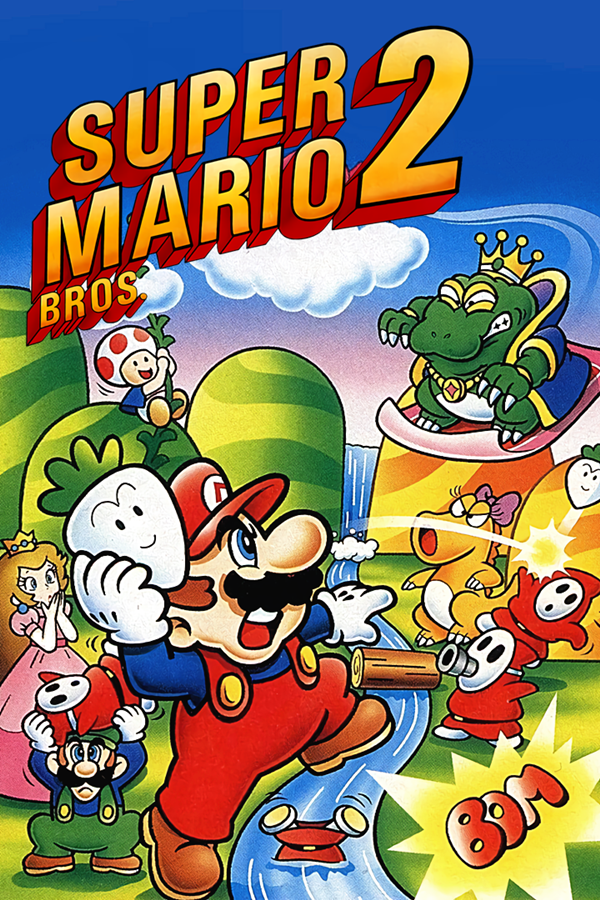

|  | |
| Playtime | Not Played |
| Last Activity | Never |
| Added | 4/29/2025 4:51:34 |
| Modified | 4/29/2025 23:40:31 |
| Completion Status | Not Played |
| Library | Playnite |
| Source | |
| Platform | Nintendo Entertainment System |
| Release Date | September 1988 |
| Community Score | 75 |
| Critic Score | |
| User Score | |
| Genre | Platform |
| Developer | Nintendo R&D2 Nintendo R&D4 |
| Publisher | Nintendo |
| Feature | Single Player |
| Links | Wikipedia Super Mario USA |
| Tag | [People] artist: Tadashi Sugiyama [People] artist: Yōichi Kotabe [People] composer: Koji Kondo [People] designer: Hideki Konno [People] designer: Kensuke Tanabe [People] designer: Yasuhisa Yamamura [People] director: Kensuke Tanabe [People] producer: Shigeru Miyamoto [People] programmer: Toshihiko Nakago [People] programmer: Toshio Iwawaki [People] programmer: Yasunori Taketani |
Super Mario Bros. 2 is a 1988 platform game developed and published by Nintendo for the Nintendo Entertainment System. After the smash hit Super Mario Bros. in 1985, Nintendo quickly released a minor adaptation of the original with advanced difficulty titled Super Mario Bros. 2, for its mature market in Japan in 1986. However, Nintendo of America found this sequel too similar to its predecessor, and its difficulty too frustrating, for the nascent American market. This prompted a second Super Mario Bros. sequel based on Yume Kōjō: Doki Doki Panic, Nintendo's 1987 Family Computer Disk System game which had been based on a prototype platforming game and released as an advergame for Fuji Television's Yume Kōjō '87 media technology expo. The characters, enemies, and themes in Doki Doki Panic have the mascots and theme of the festival, and were adapted into the Super Mario theme to make a Western Super Mario Bros. sequel.
Super Mario Bros. 2 was a resounding success, becoming the fifth-best-selling game on the NES, and was critically well-received for its design aspects and for differentiating the Super Mario series. It was re-released in Japan for the Famicom as Super Mario USA (1992), and has been remade twice, first included in the Super Mario All-Stars (1993) collection for the Super NES, and as Super Mario Advance (2001) for the Game Boy Advance. It is included as part of the Virtual Console and Nintendo Classics services.
Super Mario Bros. 2 is a 2D side-scrolling platform game. The objective is to navigate the player's character through the dream world Subcon and defeat the main antagonist Wart. Before each stage, the player chooses one of four protagonists: Mario, Luigi, Toad, and Princess Toadstool. All four characters can run, jump, and climb ladders or vines, but each character possesses a unique advantage that causes them to be controlled differently. For example, Mario has balanced speed, jumping height, and strength; Luigi can jump the highest, but moves slightly slower and has weaker strength; Princess Toadstool can float because of her dress but has the lowest speed and strength; Toad has the highest speed and strength, which allows him to pick up items quickly, but jumps the lowest. Unlike Super Mario Bros., this game has no multiplayer functionality and no time limit. The original only scrolls from left to right, but this game can also scroll right to left, and even vertically in some areas. Unlike other Mario games, the characters cannot defeat enemies by jumping on them but can stand on, pick up, and throw most enemies at each other to defeat them. Other objects that can be thrown at enemies include vegetables pulled from the ground and mushroom blocks.
The game consists of 20 different levels across the seven worlds comprising Subcon. Each world has three levels, except World 7, which has two. Each world has a particular theme that dictates the obstacles and enemies encountered in its levels, such as desert areas with dangerous quicksand and snowy areas with slippery surfaces. Levels contain multiple sections or rooms that are connected via doors or ladders. Some rooms are accessible by entering certain jars. Magic potions found in each level are used to temporarily access "Sub-space", a reflected, unscrollable area where the player can collect coins and Mushrooms that increase the character's maximum health. In addition, certain jars, when entered in Sub-space, will warp the player to the later worlds, skipping levels altogether. Other items available include cherries, which are collected in order to acquire a Star; the POW Block, which can be used to destroy all the enemies visible on the screen quickly; and a stopwatch that can stop enemies from moving for a short period of time. The player must defeat a boss enemy at the end of each of the first six worlds, then defeat Wart himself at the end of World 7 to complete the game.
The player starts Super Mario Bros. 2 with three lives, one of which is lost each time the player's character loses all health from enemy or hazard damage or when the character falls off the screen, represented by hearts. The player can replenish health by collecting floating hearts that appear upon defeating a certain number of enemies. The player will receive a Game Over upon losing the last life, though the player may continue up to twice in one game. Extra lives may be obtained by collecting hidden 1-Up Mushrooms or by using the coins collected from Sub-space to play the Bonus Chance minigame between the levels.
Mario has a dream of a staircase leading to a mysterious door to a mysterious place. A voice identifies the world as the dreamland of Subcon, and asks for Mario's help in defeating the villainous frog named Wart, a tyrant who has cursed Subcon and its people. Mario suddenly awakes and decides to tell Luigi, Toad, and Princess Toadstool, who all report experiencing the same dream. The group goes on a picnic, but discovers a cave with a long staircase. Through a door at the top, they are transported to Subcon, revealing their dreams to have been real. After defeating Wart, the people of Subcon are freed and everyone celebrates. Mario suddenly awakes in his bed, unsure if these events were a dream. He soon goes back to sleep.
Nintendo originally released a different game called Super Mario Bros. 2 on Japan's Family Computer Disk System in 1986 (later released as Super Mario Bros.: The Lost Levels for Super NES as part of Super Mario All-Stars). Its engine is an enhanced Super Mario Bros., with the same gameplay and more complex level designs, character features, and weather features. Some of the advanced level content had been culled from Vs. Super Mario Bros., a 1986 coin-operated arcade version of the original Super Mario Bros. for NES. All of these factors combined to yield an incremental game design with significantly higher difficulty.
Also that year, the young subsidiary Nintendo of America was just beginning its launch of the new Nintendo Entertainment System and its flagship game, Super Mario Bros. This international adaptation of the Famicom platform had been deliberately rebranded in the wake of the American video game crash of 1983, a regional market recession which had not directly affected the mature Japanese market. Nintendo of America did not want the increasingly popular Mario series to be too difficult to a recovering, transfiguring, and expanding market — nor to be stylistically outdated by the time the Japanese Super Mario Bros. 2 could be eventually converted to the NES's cartridge format, localized, and mass-produced for America. Utilizing its regional autonomy to avoid risking the franchise's popularity in this nascent market, Nintendo of America declined the Japanese sequel's localization to America and instead requested a newer and more player-friendly Super Mario Bros. sequel for release outside Japan.
An early prototype with vertical scrolling was developed by Kensuke Tanabe, designed by a team led by Shigeru Miyamoto, and programmed by Nintendo's frequent partner, SRD, shortly after Tanabe was hired in April 1986. The first prototype's gameplay emphasizes vertically scrolling levels with two-player cooperative action: lifting, carrying, and throwing each other; lifting, carrying, throwing, stacking, and climbing objects; and incrementally scrolling the screen upward when reaching the top. Dissatisfied so far, Miyamoto then added the traditional horizontal scrolling, saying to "make something a little bit more Mario-like", and saying "Maybe we need to change this up ... As long as it's fun, anything goes". However, the prototype software was too complex for Famicom hardware at the time, and the gameplay was still considered lacking, especially in single-player mode.
Unwilling to compromise on gameplay, Tanabe suspended development of the prototype until eventually receiving instruction to use the Yume Kōjō festival mascots in a game. He recalls, "I remember being pulled over to Fuji Television one day, being handed a sheet with game characters on it and being told, 'I want you to make a game with this'." Tanabe re-implemented that prototype's elements in his new game, and released the advergame-themed Yume Kōjō: Doki Doki Panic for the Family Computer Disk System in Japan on July 10, 1987.
The title Yume Kōjō: Doki Doki Panic is derived from "doki doki", a Japanese onomatopoeia for the sound of a quickly beating heart. The title and character concept were inspired by a license cooperation between Nintendo and Fuji Television to promote the broadcaster's Yume Kōjō '87 event, which showcased several of its latest TV shows and consumer products. The Yume Kōjō festival's mascots became the game's protagonists: a family consisting of the boy Imajin, his girlfriend Lina, and his parents Mama and Papa. The rest of the game's characters, including the main villain named Mamu, were created by Nintendo for the project. Yume Kōjō: Doki Doki Panic takes place within a book with an Arabian setting. All four characters are optionally playable, though the game is not fully completed until the player clears all levels using each protagonist.
Nintendo of America's Gail Tilden recalls that president Minoru Arakawa's request to convert the thematically unrelated Yume Kōjō: Doki Doki Panic into a Mario sequel was "odd" at first but not unusual for Nintendo, which had already converted a canceled Popeye prototype into Donkey Kong and reconceived that into Donkey Kong Jr. and Donkey Kong 3. Summarizing Tanabe's recollections within a 2011 interview, Wired said "Although the initial concept for the game had been scrapped, the development of that original two-player cooperative prototype inspired all the innovative gameplay of Super Mario Bros. 2".
For the international conversion into Super Mario Bros. 2, many graphical changes were made to the scenery and characters' look, animation, and identity. The R&D4 staff modified the character likenesses of Mario, Luigi, Princess Toadstool, and Toad, building them over their respective counterpart models of Imajin, Mama, Lina, and Papa. This marked the first time that Mario and Luigi had noticeably different heights, and Miyamoto originated the scuttling animation of Luigi's legs, to justify the enhanced jumping ability seen in the corresponding Mama character. Yume Kōjō: Doki Doki Panic needed only a few alterations for its conversion into the Mario series because its gameplay elements were already so heavily rooted in it: Starman for invincibility, the sound effects of coins and jumps, POW blocks, warp zones, and a soundtrack by Super Mario Bros. composer Koji Kondo. To reduce the game's overall difficulty, the designers made minor technical changes. They opted not to retain Yume Kōjō: Doki Doki Panic's ultimate requirement to complete each level using each protagonist; therefore, this new Super Mario Bros. 2 can be completed in only one pass by any combination of characters. A late prototype of the game covering these changes was exhibited in the first issue of Nintendo Power, dated July/August 1988. In the tradition of the Mario series, they added the ability to run by holding the B button.
Super Mario Bros. 2 was first released in North America in September 1988. In PAL regions, the game released the following year. It was such a commercial success and its contributions so substantial over Yume Kōjō: Doki Doki Panic, that it was eventually re-released in Japan in 1992 with the title Super Mario USA. Likewise, Nintendo later re-released the Japanese Super Mario Bros. 2 in America in the form of Super Mario Bros.: The Lost Levels, a part of the 1993 re-release compilation Super Mario All-Stars on the Super NES. Nintendo has continued to re-release both games, each with the official sequel title of Super Mario Bros. 2 in their respective regions.
In 1993, Nintendo released an enhanced Super Nintendo Entertainment System compilation titled Super Mario All-Stars. It includes the Super Mario Bros. games released for the Famicom/NES. The version of Super Mario Bros. 2 included in the compilation has modernized graphics and sound to match the Super NES's 16-bit capabilities, as well as minor alterations in some collision mechanics. It is possible to change the character after losing a single life, while the original version allows changing it only after completing a level or when the player loses all their lives and chooses "Continue", making the game more forgiving when choosing a character not adept at some specific level. The player begins with five lives instead of three, and the slot game gains an additional bonus: if the player obtains three sevens, the player wins 10 lives which is something that was not featured in the original NES version of the game. However, the game has a 99-life limit.
In March–April 1996, Nintendo's partnership with the St.GIGA satellite radio station released an ura or gaiden version of the game for the Satellaview system, titled BS Super Mario USA Power Challenge. Like all Satellaview games, it was released episodically in a number of weekly volumes, only in Japan, and only in this format.
It features 16-bit audiovisual enhancements to the 8-bit original in the fashion of Super Mario All-Stars, plus "SoundLink" narration (radio drama-style streaming voice data intended to guide players through the game and give helpful hints and advice) and broadcast CD-quality music. Due to the nature of SoundLink broadcasts, these games were only broadcast to players between 6:00 and 7:00 PM on broadcast dates, at which times players could download the game from the Events Plaza on the BS-X application cartridge. A single rerun of the broadcasts was conducted in the same weekly format from June 3, 1996, to June 29, 1996, at 5:00 to 6:00 PM. The BS-X download location for the rerun changed to Bagupotamia Temple.
While the underlying gameplay itself is largely similar, new and arranged content has been added. For instance, the BS version newly featured a score counter. Furthermore, at the beginning of the game, Mario is the only playable character. Later in the game, time-dependent events occur triggering, among other things, the possibility of using other characters. Another feature unique to the game is the inclusion of gold Mario statues (ten in total for each chapter) that are hidden in various locations (including Sub-Space). Collection of the statues in-game grants the player an extra life and refills the life meter. After clearing a level, the player could press "Select" to see some statistics such as the number of statues, coins, cherries, and mushrooms collected, as well as displaying which bosses had been defeated.
As a 4-volume broadcast, each week bore a different subtitle. These are the names of the volumes:
On March 21, 2001, Super Mario Bros. 2 received another release, based on the All-Stars remake, as part of Super Mario Advance, which also contains a remake of Mario Bros. Super Mario Advance was developed by Nintendo Research & Development 2, and was a launch title for the Game Boy Advance. The Super Mario Advance version of Super Mario Bros. 2 includes several new features such as the addition of the enemy Robirdo, a robotic Birdo, replacing Mouser as the boss of World 3; the addition of the Yoshi Challenge, in which players may revisit stages to search for Yoshi Eggs; and a new point-scoring system, similar to that used in the aforementioned BS Super Mario USA Power Challenge. Graphical and audio enhancements appear in the form of enlarged sprites, multiple hit combos, digital voice acting, and such minor stylistic and aesthetic changes as an altered default health-meter level, boss-order, backgrounds, the size of hearts, Princess Toadstool being renamed to the now-standard "Princess Peach", and the inclusion of a chime to announce Stars. The game was released for the Wii U Virtual Console on July 16, 2014, in Japan and later in North America on November 6, 2014. It was released for the Nintendo Switch as a part of the Nintendo Classics service on May 26, 2023.
Super Mario Advance received a "Gold" sales award from the Entertainment and Leisure Software Publishers Association (ELSPA), indicating sales of at least 200,000 copies in the United Kingdom.
Upon release, Super Mario Bros. 2 was the top-selling video game in the United States for fourteen consecutive months, from October 1988 through late 1988, into 1989 through spring and summer, to November 1989. By early 1990, 3.5 million copies were sold in the United States, eventually totaling 7.46 million copies worldwide, making it the fourth highest-selling game ever released on the Nintendo Entertainment System. Although only the fourth highest-selling NES game overall, it is the best-selling standalone NES game which was never a pack-in game.
Although The Lost Levels was considered too difficult to play, Super Mario Bros. 2 received critical acclaim. Nintendo Power listed it as the eighth best Nintendo Entertainment System video game, mentioning that regardless of its predecessor not being in the Super Mario franchise, it was distinguished on its own merits and its unique takes on the franchise's signature format. GamesRadar ranked it the 6th best NES game ever made. The staff complimented it and other third-generation games for being a greater improvement than sequels around 2012, which they thought had seen only small improvements. Entertainment Weekly picked the game as the #6 greatest game available in 1991, saying: "The second and still the best of the Super Mario franchise". In 1997 Electronic Gaming Monthly ranked the All-Stars edition as the 14th best console video game of all time, calling the level designs "unlike anything you've seen before" and highly praising the boss challenges. In the Pak Source edition of Nintendo Power, which rated all NES games released in North America from October 1985 to March 1990, Super Mario Bros. 2 was among the only three games (aside Metroid and Mega Man 2) to receive the maximum score of 5 in at least one of the categories evaluated, which was not awarded to either Super Mario Bros. nor Super Mario Bros. 3. It was awarded the score of 5 for both "Challenge" and "Theme Fun".
The re-release as Super Mario Advance in 2001 received generally positive reviews, garnering an aggregate score of 84/100 on Metacritic. One reviewer concluded "all nostalgia and historical influence aside, Super Mario Bros. 2 is still a game worth playing on the merits of its gameplay alone", and that "the only reason you may not want to pick it up is if ... you already own it in another form." However, GameSpot thought that Super Mario Bros. 3 or Super Mario World would have been a better choice for a launch game considering their respective popularity; both games were eventually also remade as part of the Super Mario Advance series. Conversely, IGN praised the choice, calling it "one of the most polished and creative platformers of the era". The game was named one of the best NES games ever by IGN, saying that the game offers greater diversity in graphics and gameplay than the original, making it a great bridge game between the other NES Mario games. ScrewAttack named Wart's battle theme in a list of the top ten best 8-Bit Final Boss Themes. Game Informer placed the game 30th on their top 100 video games of all time in 2001. In 2009, Official Nintendo Magazine ranked the game 27th on a list of greatest Nintendo games.
Next Generation reviewed the Game Boy Advance version of the game, rating it three stars out of five, and stated that "This classic probably shouldn't have been brought back. It's well translated but hasn't aged gracefully."
Many elements in Super Mario Bros. 2 have endured in subsequent sequels and in related franchise. The ability to lift and toss enemies and objects—a defining feature of its earliest prototype—has become part of the permanent repertoire of the Super Mario franchise, appearing in numerous subsequent Super Mario games. The Wii U game Super Mario 3D World features the same playable characters with the same basic physical abilities from Super Mario Bros. 2.
Many characters and features of Super Mario Bros. 2 have been assimilated into the greater Mario universe, such as Birdo, Pokey, Bob-omb, and Shy Guy. This is the first game in which Princess Toadstool and Toad are playable characters. Princess Toadstool established a floating jump and stars in later Mario games such as Super Princess Peach. Toad stars in later Mario games like Wario's Woods, New Super Mario Bros. Wii, and Captain Toad: Treasure Tracker. In Super Mario Bros. 2, Luigi became distinguished from Mario's form, especially his tall stature and scuttle jump. The Super Smash Bros. series gained many direct homages to this game. The 1989 cartoon television show The Super Mario Bros. Super Show! is based on characters, settings, and music from Super Mario Bros. 2.